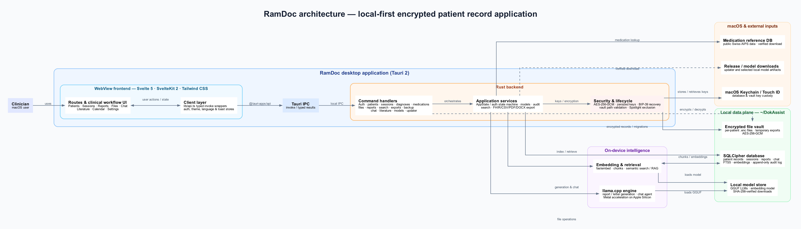

RamDoc
A 100% local, encrypted macOS application for Swiss patient record management.
Patients, sessions, diagnoses, medications, attachments and reports live in one encrypted vault on your own Mac. There is no server, no account and no telemetry — the application works with the network switched off.
Download
The current release, built for Apple Silicon from the source in this repository.
Download the latest release Build from source
- Requires
- macOS 13 or newer, on a Mac with Apple Silicon (M1 or later)
- Distribution
-
Apple Silicon
.dmg, published automatically on every versioned release - Licence
- MIT — free to use, read, fork and audit
- Data location
- An encrypted vault in your macOS application data directory. Nothing else.
What it does
Three concerns, each carried through the whole application rather than added as a feature.
Security
- Encryption everywhere AES-256-GCM for every file in the vault; SQLCipher for the database itself.
- Keys in the Keychain Key material lives in the macOS Keychain and is zeroised in memory after use.
- Tamper-evident audit trail Every access is appended to an HMAC-chained log with an independent checkpoint.
- Recovery you hold A 24-word recovery phrase restores the vault. Nobody else can.
Specialisation
- Swiss identifiers AHV numbers are validated on entry, checksum included.
- AMDP psychopathology Structured forms for the AMDP system, not free-text boxes.
- Clinical record model Sessions, ICD-10 diagnoses, medications, attachments and reports.
- Drafting that knows the record Reports are drafted from the patient's own history, with provenance kept.
Data protection
- Local by construction No server, no sync, no account, no analytics. Nothing to leak.
- Inference stays on device The language model runs on your Mac; no text is sent to a provider.
- Search without exposure Full-text search runs inside the encrypted database.
- Careful with files Size caps, symlink-escape checks and non-guessable temporary filenames.
Security model
Records are encrypted at rest with AES-256-GCM, the database with SQLCipher, and the keys are held by the macOS Keychain rather than by the application. Access is written to a tamper-evident audit log, and recovery rests on a 24-word phrase that only you hold.
How it is built
A Rust backend on Tauri 2, a Svelte 5 interface, and SQLCipher with versioned migrations. Everything in the diagram runs on the one machine.
{kind=link}
